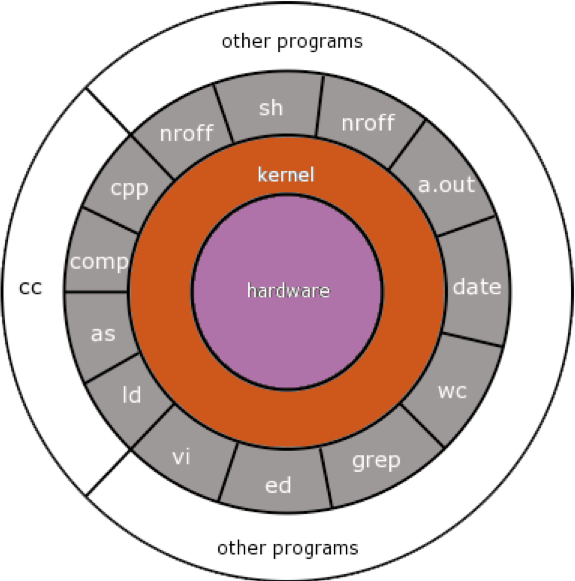
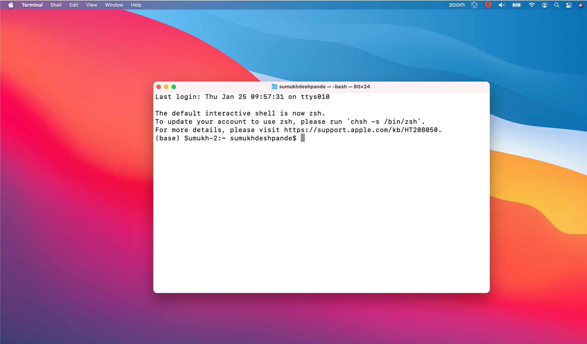
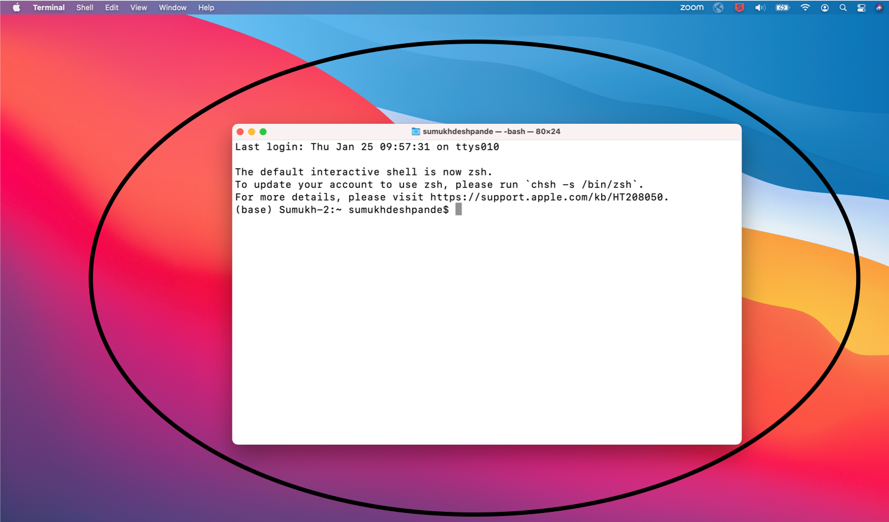

This is a Quarto website.
To learn more about Quarto websites visit https://quarto.org/docs/websites.
Day 1
We will cover:
- Introduction to the course.
- Basic Unix.
- Introduction to HAWK.
- Basic Unix Continued.
- Fetching the scrnaseq nextflow pipeline.
- Setting up the pipeline for execution.
- Running the pipeline.
What you will learn on this course:
- Basic Unix commands
- Working on HPC
- Downloading scrnaseq datasets and genome files.
- Setting up directory for the data processing and analysis.
- How to run Nextflow pipeline on HPCs.
- How to process 10x cellranger pipeline.
- How to process and analyse scrnaseq count data in R.
- How to visualise the analysed data and perform additional downstream analysis.
Introduction to Single-Cell RNA-seq
- RNA-seq allows profiling the transcripts in a sample in an efficient and cost-effective way.
- Part of its success is due to the fact that RNA-seq allows for an unbiased sampling of all transcripts in a sample, rather than being limited to a pre-determined set of transcripts (as in microarrays or RT-qPCR).
- Typically, RNA-seq has been used in samples composed of a mixture of cells, referred to as bulk RNA-seq, and has many applications.
- For example, it can be used to characterise expression signatures between tissues in healthy/diseased, wild-type/mutant or control/treated samples.
- However, with bulk RNA-seq we can only estimate the average expression level for each gene across a population of cells, without regard for the heterogeneity in gene expression across individual cells of that sample.

Unlike with the bulk approach, with scRNA-seq we can estimate a distribution of expression levels for each gene across a population of cells.
This allows us to answer new biological questions where cell-specific changes in the transcriptome are important. For example discovering new or rare cell types, identifying differential cell composition between healthy/diseased tissues or understanding cell differentiation during development.
Sample Preparation Protocols
Broadly speaking, a typical scRNA-seq protocol consists of the following steps (illustrated in the figure below):
- Tissue dissection and cell dissociating to obtain a suspension of cells.
- Optionally cells may be selected
- Capture single cells into individual reaction containers (e.g. wells or oil droplets).
- Extracting the RNA from each cell.
- Reverse-transcribing the RNA to more stable cDNA.
- Amplifying the cDNA (either by in vitro transcription or by PCR).
- Preparing the sequencing library with adequate molecular adapters.
- Sequencing, usually with paired-end Illumina protocols.
- Processing the raw data to obtain a count matrix of genes-by-cells
- Carrying several downstream analysis (the focus of this course).
Unix: Configuration
Unix: Hardware
- Hardware: the physical components (the bits you can see when you take the back off a computer.
- CPU (central processing unit): the computer chip performing the calculations.
- Hard drive: saved storage – your saved files.
- RAM (random access memory): like the hard drive, it stores information. Access (reading this information) is faster than the hard drive, although information is only present whilst the compute is powered on, i.e. this is memory space.

Unix: Kernel
- The kernel sits between the command line and the hardware.
- When you type a command line to the screen and hit “enter,” the kernel executes the command, allocating the appropriate time and memory to the task.
Unix: Commands
- the commands are the bread-and-butter functions common to all Linux installations and are part of the core (minimal) install.
- they perform core processes such as file and job manipulations (read, write, delete files/jobs).
Unix: Programs
- Other programs work identically to the core commands.
- They are different because they generally perform specialised functions, for example, mapping next-generation sequence to a genome assembly.
Basic Unix: Graphical User Interface (GUI) & Command Line/Shell
- All Windows/Mac/Linux PC’s use a GUI to allow users to easily navigate and use the PC.
- The GUI is common to Window/Mac/Linux.
- The interface permits you to access files and run commands/programs by clicking icon/apps, drag-and-drop.
This is a shell. We can use this to type commands etc.

In simple terms, the window on the computer into which you type a command, is called the shell
